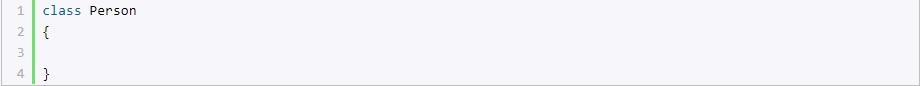

C# является полноценным объектно-ориентированным языком. Это значит, что программу на C# можно представить в виде взаимосвязанных взаимодействующих между собой объектов. Описанием объекта является класс, а объект представляет экземпляр этого класса. Можно еще провести следующую аналогию. У нас у всех есть некоторое представление о человеке, у которого есть имя, возраст, какие-то другие характеристики. То есть некоторый шаблон - этот шаблон можно назвать классом. Конкретное воплощение этого шаблона может отличаться, например, одни люди имеют одно имя, другие - другое имя. И реально существующий человек (фактически экземпляр данного класса) будет представлять объект этого класса. По умолчанию проект консольного приложения уже по умолчанию содержит один класс Program, с которого и начинается выполнение программы. По сути класс представляет новый тип, который определяется пользователем. Класс определяется с помощью ключевого слова сlass: 
Кроме обычных методов в классах используются также и специальные методы, которые называются конструкторами. Конструкторы вызываются при создании нового объекта данного класса. Конструкторы выполняют инициализацию объекта.